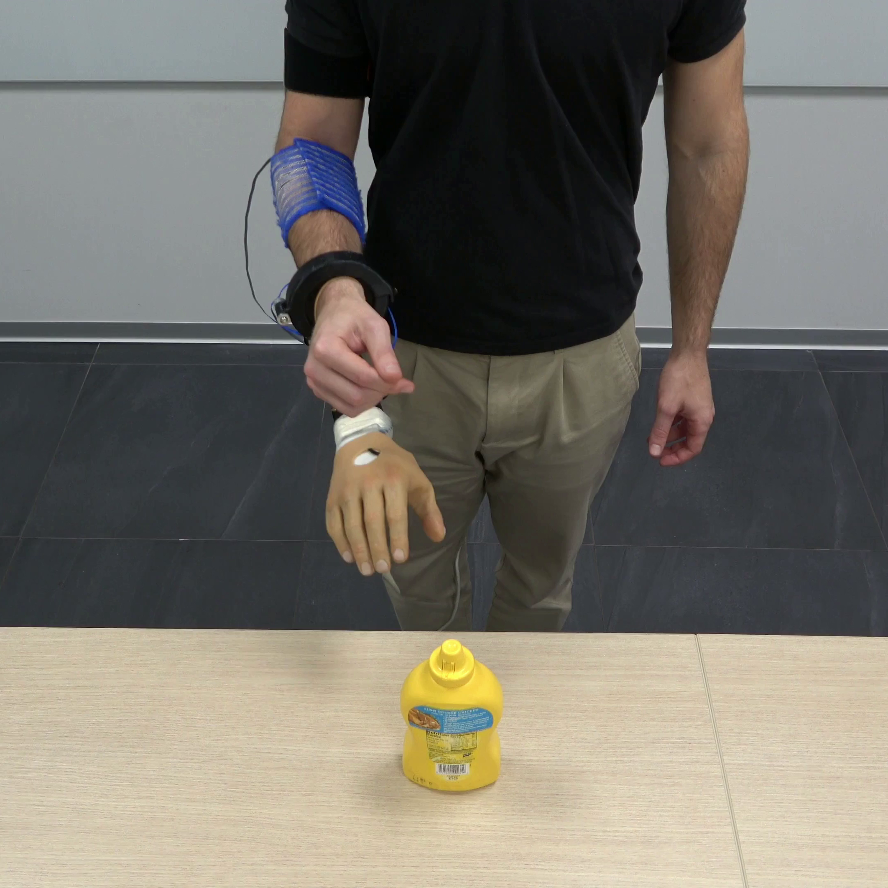
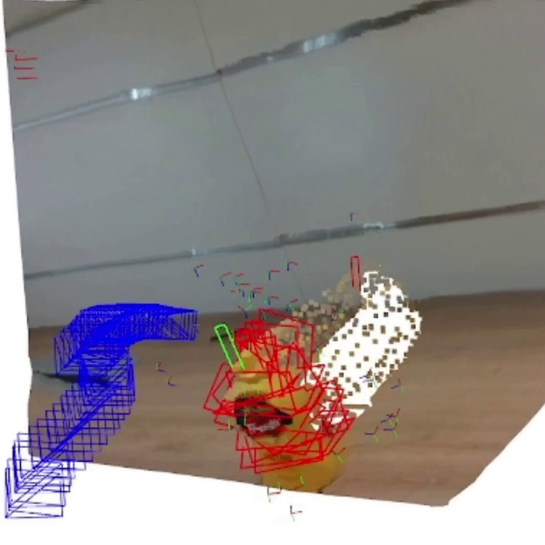
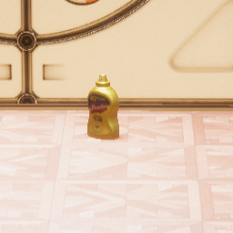

Research
Papers sorted by recency. Hover to play.
Your browser does not support the video tag.

Continuous Wrist Control on the Hannes Prosthesis: a Vision-based Shared Autonomy Framework
Federico Vasile ,
Elisa Maiettini ,
Giulia Pasquale ,
Nicolò Boccardo ,
Lorenzo Natale
International Conference on Robotics and Automation (ICRA) , 2025
project website /
paper /
code
Segmentation and visual servoing for wrist control using an eye-in-hand camera.
Your browser does not support the video tag.

Bring Your Own Grasp Generator: Leveraging Robot Grasp Generation for Prosthetic Grasping
Giuseppe Stracquadanio ,
Federico Vasile ,
Elisa Maiettini ,
Nicolò Boccardo ,
Lorenzo Natale
International Conference on Robotics and Automation (ICRA) , 2025
project website /
paper /
code
Bridging the gap between robotic and prosthetic grasping through depth estimation, robotic grasp generation and visual odometry.
Your browser does not support the video tag.

Grasp Pre-shape Selection by Synthetic Training: Eye-in-hand Shared Control on the Hannes Prosthesis
Federico Vasile ,
Elisa Maiettini ,
Giulia Pasquale ,
Nicolò Boccardo ,
Lorenzo Natale
International Conference on Intelligent Robots and Systems (IROS) , 2022
project website /
paper /
code (simulation) /
code (experiments)
A synthetic data generation framework for grasp pre-shape prediction with object-part granularity.
{kind=link}